news
| Nov 05, 2025 | ICCAS 2025에서 권태준 학생이 성공적인 발표를 마쳤습니다. 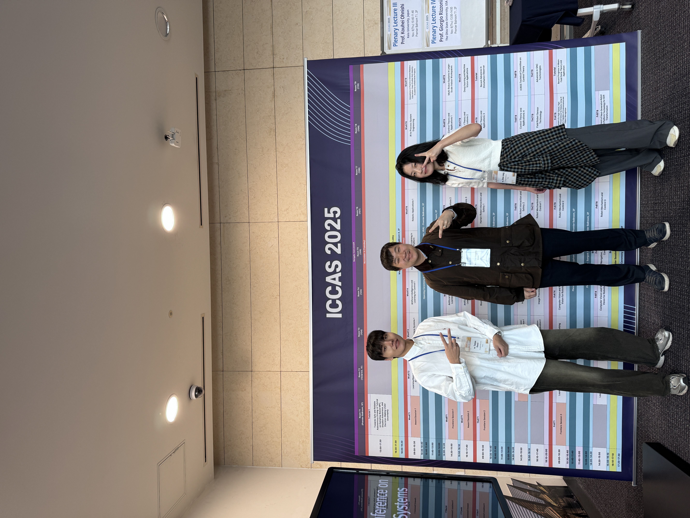 참여학생: 권태준, 장지은 |
|---|---|
| Oct 26, 2025 | 남세광 교수가 로봇신문의 ‘젊은 로봇 공학자’로 소개되었습니다. ‘젊은 로봇 공학자’ (88) 경북대학교 남세광 교수 |
| Oct 16, 2025 | KIEV 2025에서 장지은 학생이 성공적인 발표를 마쳤습니다. 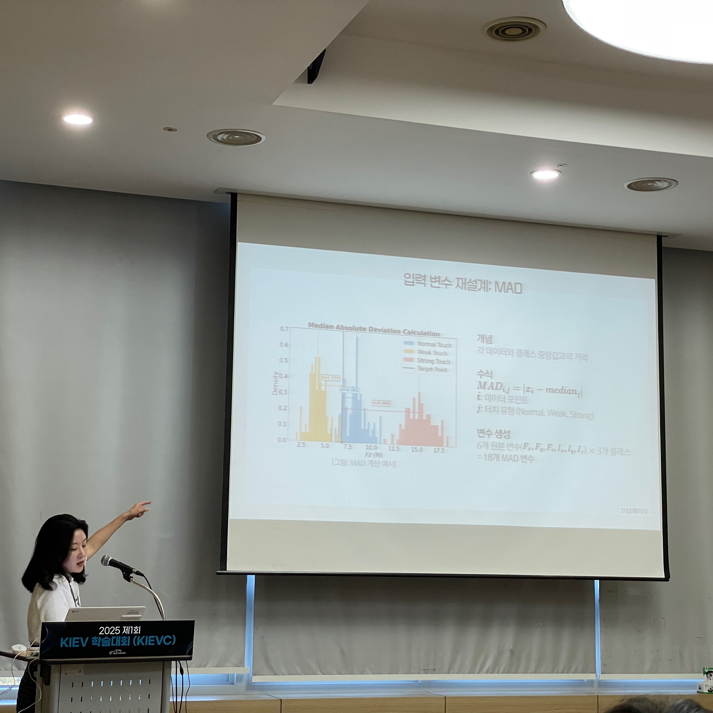 참여학생: 장지은, 권태준 |
| Oct 02, 2025 | Humanoids 2025에서 Dexterous Humanoid Manipulation Workshop에 포스터 발표 및 참여 하였습니다. 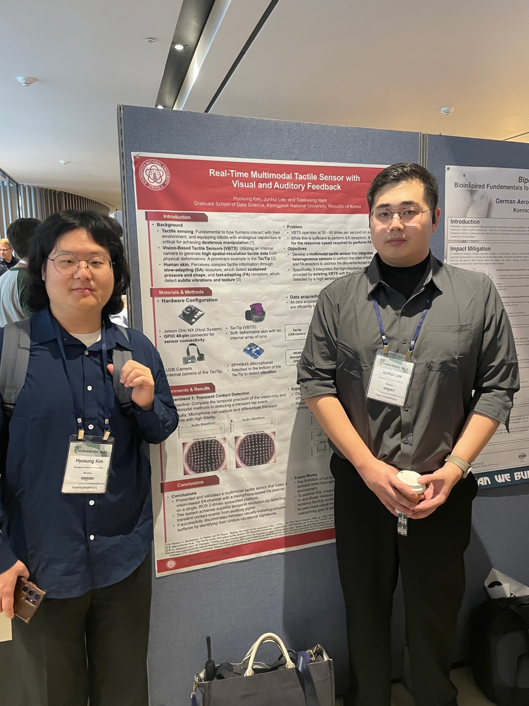 참여학생: 김효성, 이준희 |
| Sep 25, 2025 | University of Bristol의 Nathan F. Lepora 교수, Efi Psomopoulou 교수, Silvia Terrile 박사가 경북대학교 Rottoda랩을 방문하여 강연과 연구 미팅을 진행하였습니다. 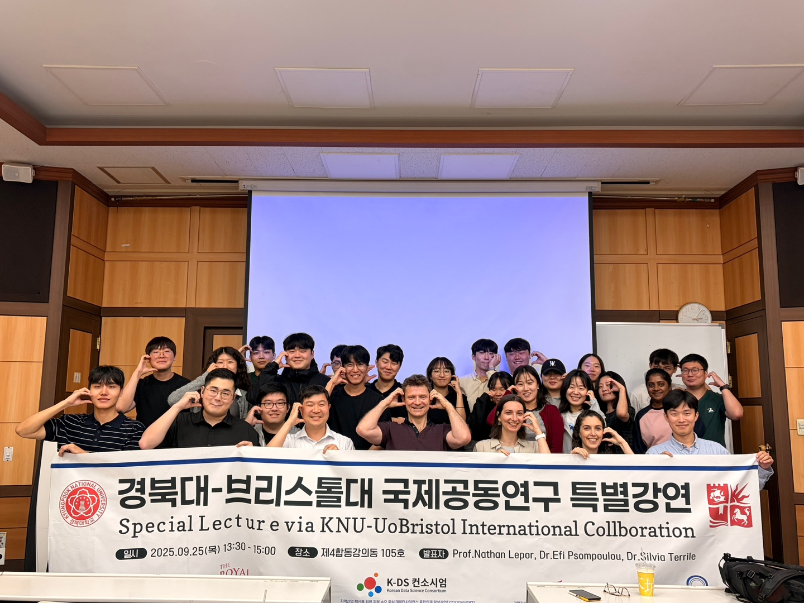 |
| Sep 11, 2025 | 경축! Rottoda의 에이스, 김효성 학생이 2025 ICT 챌린지에서 과기부 장관상을 수상하였습니다. 축하합니다. 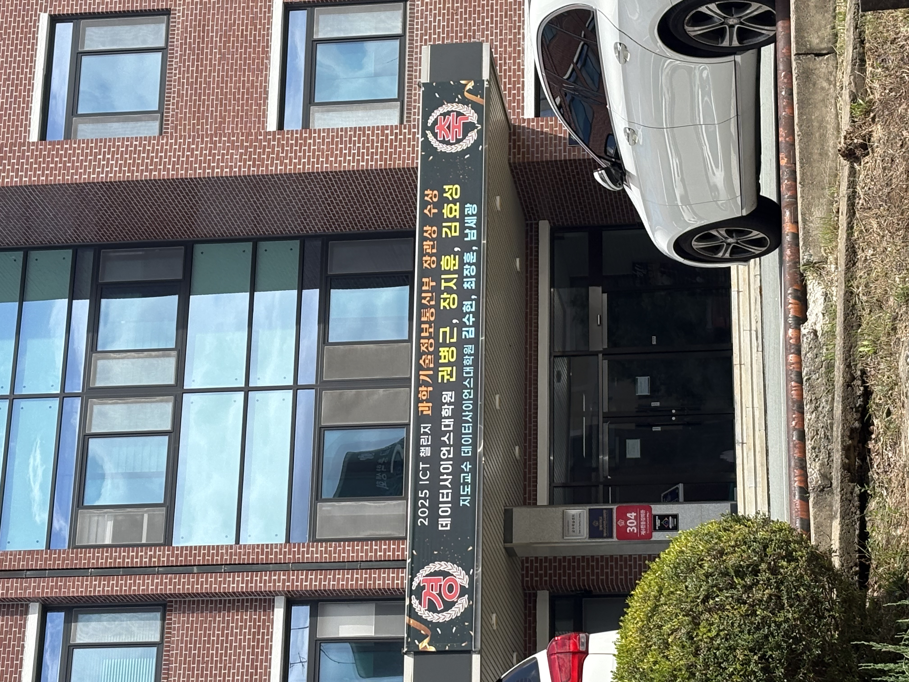 매일신문, “스마트 안전벨트로 미래 모빌리티 혁신, 경북대 학생들이 해냈다” 뉴시스, “경북대 d.ACE팀, ‘ICT 챌린지’ 과기부 장관상 수상” 경북신문, “경북대 대학원생팀, ‘차세대 스마트 안전벨트’로 과기부 장관상 수상” 포인트경제, “경북대 데이터사이언스학과, ‘과기부 장관상’ 수상” |
| Sep 05, 2025 | 대구 호텔수성에서 열린 K-Data Science 컨퍼런스에 참가하였습니다. 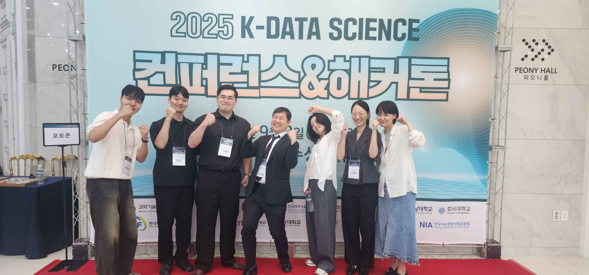 참여학생: 권태준, 박종민, 이준희, 장지은, 나윤희, 이은정, 김효성(건강상의 이유로 부재) |
| Aug 29, 2025 | 오스트리아 빈에서 열리는 EKC2025 학회에 참가하였습니다. 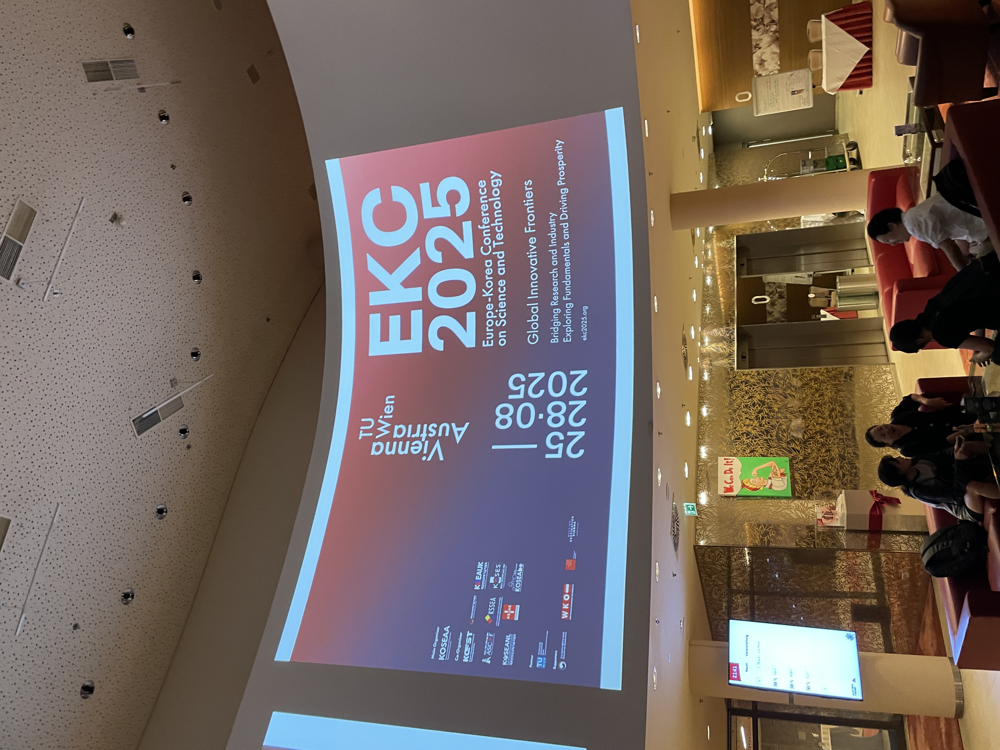 참여학생: 장지은, 김효성 |
| Aug 22, 2025 | 2025학년도 1학기 졸업식 거행! 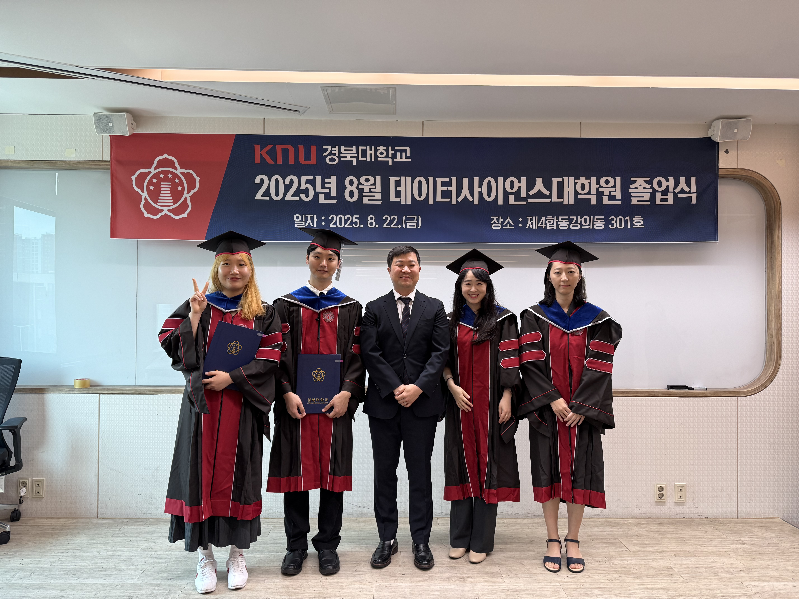 졸업자: 김은주, 박종민, 탁은영, 나윤희 |
| Jul 08, 2025 | 햅틱스 분야 가장 권위있는 학회인 World Haptics Conference 2025가 수원에서 열려, Rottoda랩의 멤버들도 성공적인 데모와 발표를 수행했습니다. 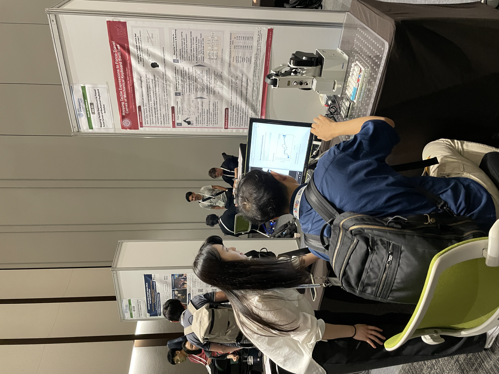 참여학생: 탁은영, 장지은, 권태준, 김효성 |
| Jun 29, 2025 | rottoda.com 도메인 구매를 완료 하였습니다. |
| Jun 29, 2025 | 홈페이지를 새단장 했습니다! (참고 디자인: al-folio) |
| Apr 25, 2025 | 삼성역 COEX에서 ITRC 인재양성대전에 참여하였습니다. 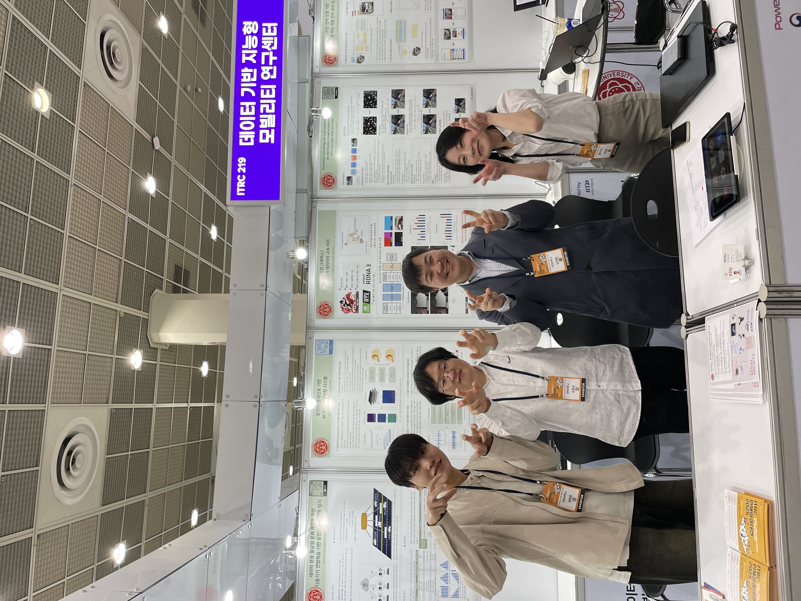 참여학생: 권태준, 김효성, 장지은 |
| Feb 21, 2025 | Robot Touch Data Lab에서 첫 졸업생을 배출했습니다. 한영민, 우승준 학생, 행복하세요~! 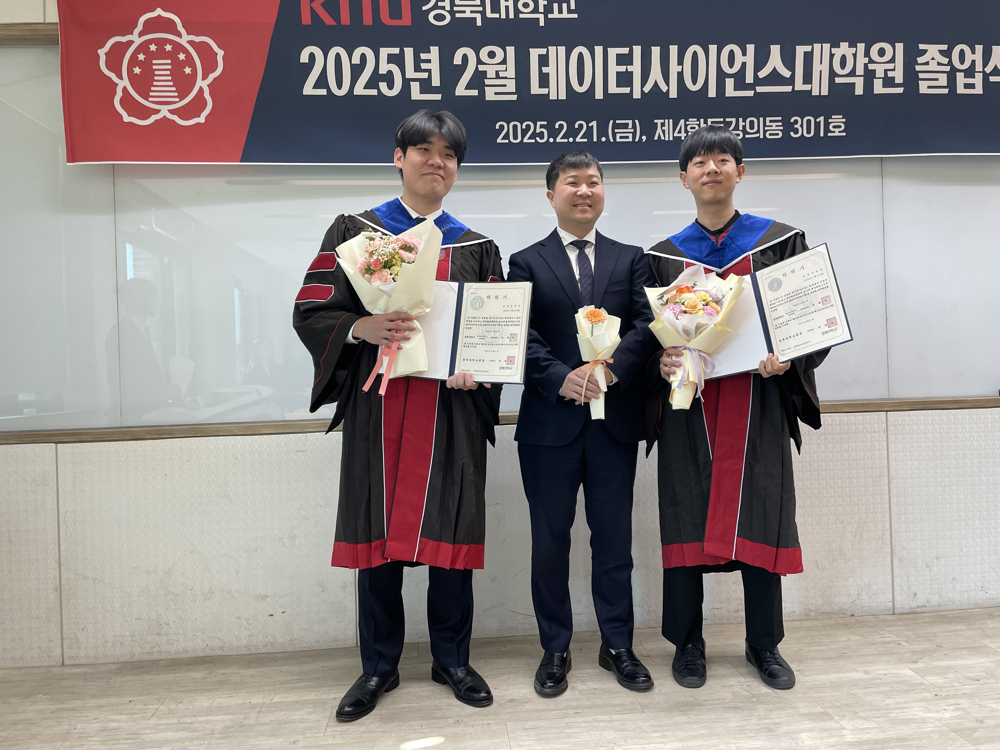 |
| Nov 28, 2024 | Robot Touch Data Lab의 1호 멤버인 권태준 학생이 나노기술협의회에서 주관하는 2024 나노영챌린지 공모전에서 우수상을 수상하였습니다. 축합니다! 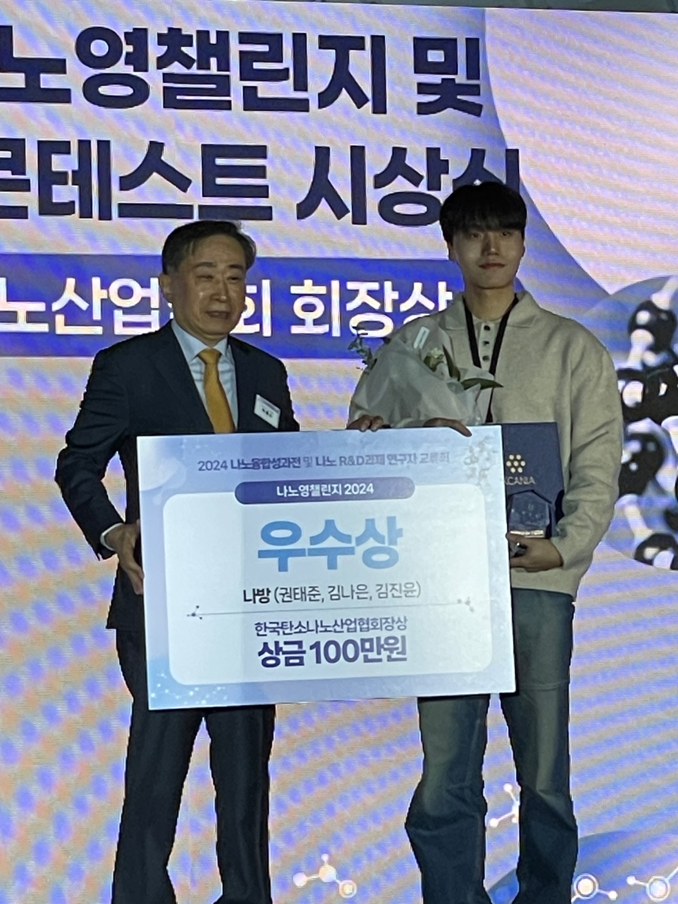 |
| Aug 21, 2024 | 제2회 한국 햅틱스 학술대회의 미래 모빌리티 햅틱 기술 아이디어 공모전에서 ‘AI를 활용한 햅틱 모빌리티 기술’ 을 주제로 참가하여 인기상을 수상하였습니다. 축하합니다! 👏 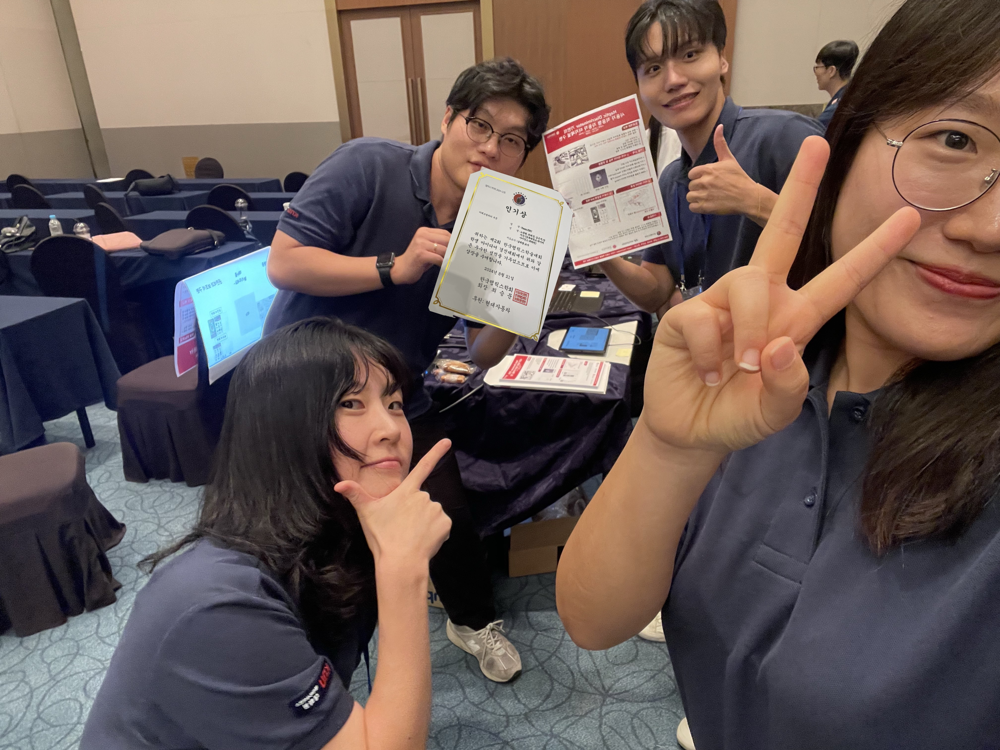  수상학생: 노광현, 권태준, 김은주, 장지은 수상학생: 노광현, 권태준, 김은주, 장지은 |
| Jul 25, 2024 | Robot Touch Data Lab의 역사적인 첫 랩 회식을 진행했습니다. 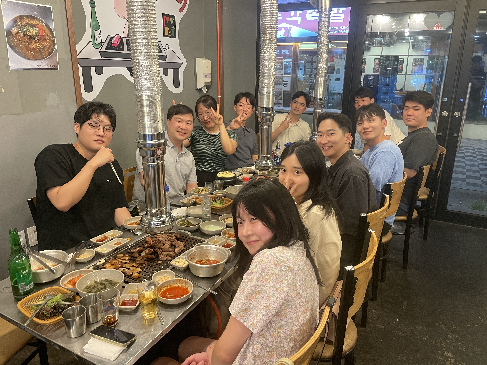 |
| Nov 07, 2015 | A long announcement with details |